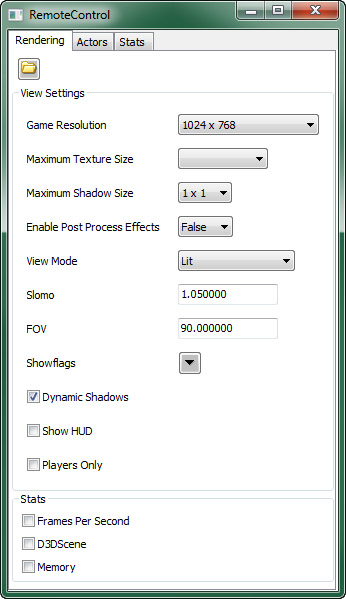
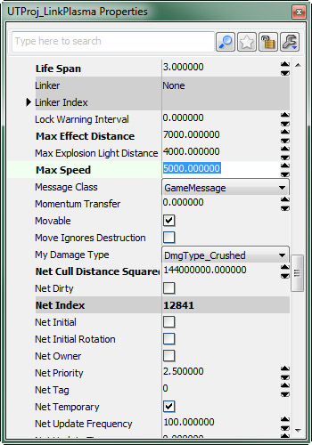
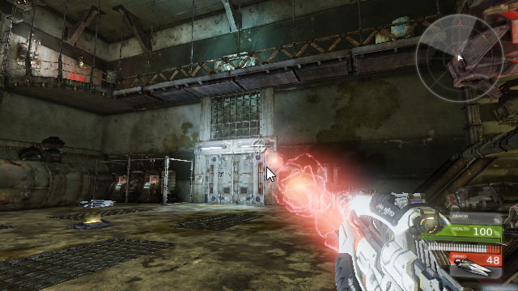
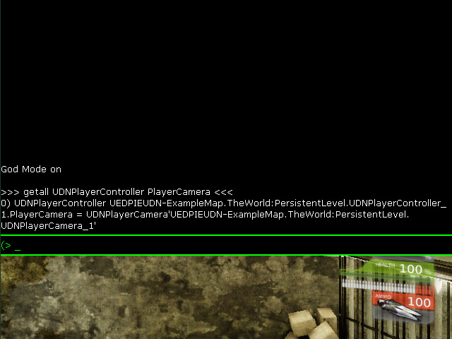
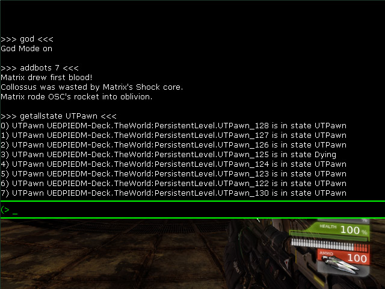
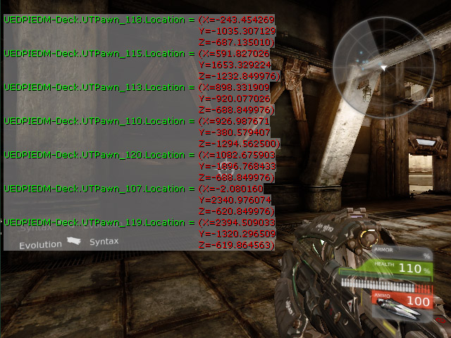
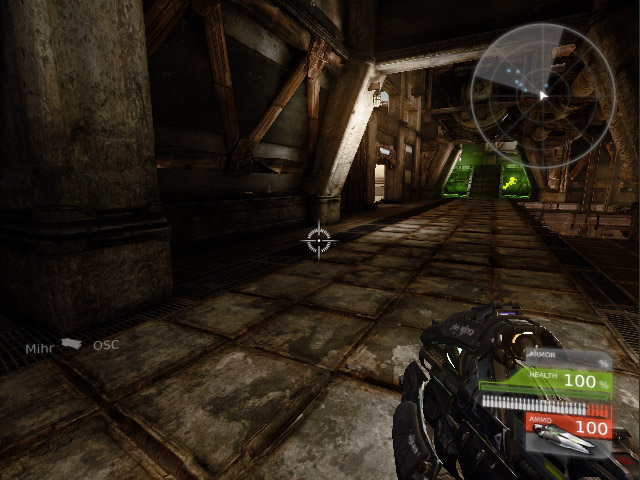

UDN
Search public documentation:
GameplayDebuggingCH
English Translation
日本語訳
한국어
Interested in the Unreal Engine?
Visit the Unreal Technology site.
Looking for jobs and company info?
Check out the Epic games site.
Questions about support via UDN?
Contact the UDN Staff
日本語訳
한국어
Interested in the Unreal Engine?
Visit the Unreal Technology site.
Looking for jobs and company info?
Check out the Epic games site.
Questions about support via UDN?
Contact the UDN Staff
游戏性调试
概述
远程控制

RemoteControl 是一个特殊的窗口，可以在游戏运行的时候打开，提供有关游戏某方面的信息和控制。 当这个窗口在游戏窗口外部并且使用 wxWindows 进行创建，那么在禁用 wxWindows 的情况下不可用，默认情况下是这样的，通过在虚幻编辑器内部运行在编辑器中播放游戏会话。要启用 wxWindows 和 RemoteControl，游戏必须通过-wxwindows 命令行参数运行。
要了解有关使用这个功能的更多信息和完整指南，请参阅远程控制页面。
属性查看和操作
对象数据管理
这些控制台命令允许您为游戏中对象甚至是这个类默认对象打开属性窗口，然后可以在运行时进行查看或修改。注意，有一个None 种类，它包含了没有声明为 var() 的所有变量，从而使您具有访问所有对象数据的完整访问权限。
由于这些命令依赖于游戏窗口外部的属性窗口，这些窗口是使用 wxWindows 创建的，如果启用了 wxWindows，不会提供这些命令，默认情况是这样的。要启用 wxWindows 以及诸如此类的控制台命令，游戏必须通过 -wxwindows 命令行参数运行。
注意： 它同时也会启用远程控制。如果您愿意，您还可以添加 -norc 命令行参数禁用远程控制窗口。
EditActor
editactor 控制台命令可以使游戏中的 actor 的属性出现在属性窗口中。这个命令只对由 Actor 扩展而来的类有效。这个命令可以选取一个名称或一个类作为一个参数。可以选择传递 trace 参数替换使玩家相机当前瞄准的 Actor 得以使用的名称或类。
如果指定了一个 Actor 名称，那么无论是否带有 name= 前缀，都会显示该 Object（对象）的属性。
editactor name=UTPawn_0这将会打开
UTPawn_0 对象的属性窗口。
如果指定了一个类，那么会显示这个类或者其子类的第一个 Actor 的属性。
editactor class=UTPawn它将会选择第一个
UTPawn 。在这个实例中，它最有可能打开的是当前玩家的 UTPawn 的属性。
如果指定了 trace 参数，那么会显示要瞄准的 Actor 的属性。
editactor trace它将会打开相机瞄准的对象的属性窗口。 示例使用： 在创建新载具的实例中，无疑需要对载具的属性进行精细调整，使其符合要求的驾驶感觉。设置默认属性设置是 .ini 文件中的属性值将需要启动游戏，彻底检验当前值，关闭游戏，调整值，再次启动游戏，测试值等等。很明显它比理想情况要少，而且在某种程度上效率不是很高。使用
editactor 命令允许在游戏运行的过程中甚至是在玩家坐在准备进行彻底测试的载具中的时候调整载具的所有属性。对于调节游戏性来说，它是一种非常有效和直观的方法。
这里最简单的方法可能就是使用 trace 参数，就只瞄准提到的载具，但是指定这个类也很简单。
对于载具，您不太可能会知道载具的具体名称，因为它们通常都是从工厂中动态生成的，而且没有直接放在地图中。


EditObject
editobject 控制台命令可以使游戏中的特定对象的属性出现在属性窗口中。从功能上看，该命令与 editactor 命令具有相同的功能，但是它没有限制类必须通过 Actor 扩展，而且它没有可选的 trace 参数。
注意： 在虚幻引擎内通过 Play In Editor（在编辑器中播放）会话运行地图时， 这个命令可能不适用于某些类或对象。
如果指定了一个 Object 名称，那么无论是否带有 name= 前缀，都会显示该 Object（对象）的属性。
editobject GameThirdPersonCamera_0 editobject name=GameThirdPersonCamera_0这两个命令的功能使相同的，而且都会显示
GameThirdPersonCamera_0 对象的属性。
如果指定了一个类，那么会显示这个类或者其子类的第一个 Object 的属性。
editobject class=GameThirdPersonCamera它将会选择第一个
GameThirdPersonCamera 。在这个实例中，它最有可能打开的是当前玩家的 GameThirdPersonCamera 的属性。
示例使用：
实现除第一人称之外的相机通常需要与玩家网格物体之间具有一定的偏移量，而其他角度可能需要调节。当然，要想使相机偏移适当的距离得到预期的外观和感觉是需要一定技巧的。您肯定不希望一直在代码和需要使用每个调整进行编译的测试之间周旋。如果您也使用的是与模块化系统（ GameFramework 示例中的一部分）相似的系统， 那么表示您处理的是对象而不是 actor。=editobject= 命令使您可以在游戏运行的情况下轻松地查看并修改这些模块的属性，这样可以使您的相机调整过程变得非常简单和直观。
通过使用 editobject 命令并向它传递相机模块的类，显示并调节模块的属性，使偏移量刚好合适。
editobject class=UDNCameraModule它将会打开当前使用的相机模块的属性窗口。


EditDefault
editdefault 控制台命令可以使类默认对象的属性可用，类似于使用 editobject 控制台命令指定一个类。这个类可以使用 class= 前缀指定，但是它不是必需的。 该命令非常适用于频繁生成的类，例如，实时策略游戏中的射弹或药物。
注意： 在虚幻引擎内通过 Play In Editor（在编辑器中播放）会话运行地图时不允许使用这个命令。
示例使用：
如果您经常在代码和测试之间周旋，那么调整射弹的行为可能会是一件非常困难的事。在您测试的过程中直接在游戏内部编辑默认值，经过简化会极大地改善这个过程的效率。
只需使用 editdefault 命令，并向它传递一个射弹类的名称：
editdefault UTProj_LinkPlasma editdefault class=UTProj_LinkPlasma这两个命令的功能相同，都会显示
UTProj_LinkPlasma 类的默认射弹，然后可以对这个类进行修改，允许您调整这个类以后使用的所有实例的行为。

EditArchetype
editarchetype 控制台命令提供原型属性。通过使用这个命令将路径(Package.Group.Name)传递给原型来指定要编辑的原型。 和 editdefault 命令一样，这个命令对于那些作为频繁生成的物体的模板使用的原型（例如，实时策略游戏中的射弹或单位）或者作为数据定义或内容持有者使用的原型来说非常有用。
除了可以编辑这个原型的属性，还可以在属性窗口中使用https://udn.epicgames.com/pub/Three/GameplayDebuggingCH/arch_save_button.jpg按钮将这些设置保存到软件包中的原型中，这些它们就不会弄丢了。
注意： 在虚幻引擎内通过 Play In Editor（在编辑器中播放）会话运行地图时不允许使用这个命令。
示例使用：
假设您将一个武器类设置为将原型作为它的射弹的模板使用。这样可以轻松地调整射弹的外观和行为，不需要修改和重新编译脚本。但是，它通常还需要运行游戏和测试、关闭游戏，然后进行更改，运行游戏和测试等等。通过使用 editarchetype 命令，可以在游戏运行的过程中进行一些修改来得到一个简单高效的工作流程。
这个射弹使用的是原型的当前设置：
 只需使用
只需使用 editarchetype 命令，然后将这个原型的路径传递给它：
editarchetype UDNProjectiles.RedPlasma
 通过修改这个属性，射弹的外观和行为会实时发生改变：
通过修改这个属性，射弹的外观和行为会实时发生改变：

如果您对设置满意，那么请在属性窗口中按下https://udn.epicgames.com/pub/Three/GameplayDebuggingCH/arch_save_button.jpg按钮将当前设置保存到原型。静态对象数据检查
这些控制台命令用于在游戏运行时查看对象数据的静态截图。它们将会捕获执行命令时特定数据的值，然后在控制台中显示这个数据，同时将其输出到日志记录中。GetAll
getall 控制台命令可以为特定类的所有对象返回一个特定变量值，并将其显示在屏幕上，通过按下 '~' 键可以看到，然后将它们输出到日志记录中。这个命令后面紧接着就是要访问的类中的类名称和变量。
示例使用：
在实现一个新的自定义相机系统时，运行游戏彻底检验这个新相机只是为了看看它是否按照预期进行工作，这样做可能会令人失望。相机可能会无法正常工作，但是它可能只是一些非常简单的问题，例如，首先是还没有创建以及正确分配相机。向代码中添加日志记录声明，运行游戏，关闭游戏，查看日志记录，了解结果是一种查看是否已经分配相机的方法。但是，如果您可以在游戏运行的过程中刚好在游戏中查看到，那么会更加容易，效率会更高。=getall= 命令可以使它成为现实。
通过使用这个命令并将其传递到您的自定义 PlayerController 类以及其内部包含的相机变量的名称，将会在控制台的这个地方显示这个变量的当前值，可以立即让您知道是否已经正确分配相机或者其他地方是否存在问题。
getall UDNPlayerController PlayerCamera它将会在游戏中控制台内列出内存中每个
UDNPlayerController actor 的 Name 和 PlayerCamera 。

因为PlayerCamera 有一个值不是 None ，所以您知道已经正确分配了相机。
其他参数：
还可以使用这个命令通过制定一些可选参数获取特定类的单独实例的特定变量的值。
- Name= - 会显示具有这个
Name的Object的特定变量值。 - Outer= - 会显示特定类的所有实例的特定变量值，将这个
Object作为它的Outer。
- SHOWDEFAULTS - 会显示除当前值之外的特定变量的默认值。
- SHOWPENDINGKILLS - 会显示实例，即使它们是孤立和搁置的删除。
- DETAILED - 会显示有关通过
GetDetailedInfoInternal()函数的实例的详细信息。
GetAllState
getallstate 控制台命令会返回特定类的所有对象的当前状态，并将其显示在游戏中的控制台上，通过按下 '~' 键可以看到，然后将它们输出到日志记录中。该命令后面紧跟着就是要访问的类的名称。
示例使用：
getallstate UTPawn它将会在游戏中的控制台上列出内存中每个
UTPawn 的当前状态。

它会为您提供一个有关UTPawns 在游戏中进行的操作的快速概述。它可以快速地指出异常现象，例如，在生成机器人而且有一个 UTPawn 还处于 Dying 状态时进行截图，您在屏幕截图中看到的异常现象。
动态对象数据检查
这些控制台命令用于在对象数据随着时间不断变化的时候检查它。它们将会显示一系列数据，它们会直接在屏幕上更新每一帧，覆盖游戏将其作为 HUD 的一部分。DisplayAll
displayall 控制台命令可以为特定类的所有对象返回一个特定变量值，并将其显示在屏幕上。这个命令后面紧接着就是要访问的类中的类名称和变量。
示例使用：
displayall UTPawn Location它会列出屏幕上的每个
UTPawn 的 Name 和 Location ，更新每一帧。

DisplayAllState
displayallstate 控制台命令会返回特定类的所有对象的当前状态，然后将其显示在屏幕上。该命令后面紧跟着就是要访问的类的名称。
示例使用：
创建游戏中真实可信的 AI 是一项困难的任务，但是如果没有一种可以在 AI 进行交互的时候密切注视所有 AI 的方法，那么创建 AI 将会变得更加困难。=displayallstate= 命令会使创建它的其中一方面内容变得快速简便。您可以在屏幕上显示每个 AI 的当前状态，在它们做出新的决定时更新每一帧。
通过使用这个命令并将其传递给 AI 实体的类，您会随时具有有关您的 AI 的概述。
displayallstate UTBot它将会在屏幕上列出内存中每个
UTBot 的当前状态，更新每一帧，这样可以非常容易地看到每个机器人具体都做了什么。

DisplayClear
displayclear 控制台命令会清除当前在屏幕上显示的所有对象数据。这个命令不带任何参数。
示例使用：
displayclear它将会通过前面的 DisplayAll or DisplayAllState 命令清除在屏幕上显示的对象数据。


对象数据修改
设置
set 控制台命令将会为特定类的所有实例设置变量值以及类默认对象。该命令后面紧接着就是类名称、类中要修改的变量以及要设置这个变量的值。它对于调整 RTS 中的武器、射弹、机器人和药品等等非常有效。
注意： 在虚幻引擎内通过 Play In Editor（在编辑器中播放）会话运行地图时不允许使用这个命令。
示例使用：
平衡武器是一项需要技巧的工作，要不断调整属性获取合适的组合，这样就不会出现一种武器强于其他武器的情况。没有人真的愿意尝试通过求助于在代码中更改属性然后进行编译和测试完成这项操作。因为实际上您希望一次影响所有武器实例，所以 editactor 命令不会剪切它。但是，=set= 命令对于这样的任务非常适用。
通过使用这个命令然后向其传递一个类名称、变量名称以及该变量的值，修改当前存在的这个类的所有实例以及或许可能会生成的实例的值会变得很容易。
set utweap_linkgun maxammocount 150它会增加所有链接枪可以装的最大弹药数。

游戏性代码分析
 要获取详细的概述，请参阅游戏性分析器页面。
有关用于分析游戏性的命令行参数的更多信息，请参阅游戏性分析页面。
要获取详细的概述，请参阅游戏性分析器页面。
有关用于分析游戏性的命令行参数的更多信息，请参阅游戏性分析页面。
STAT命令
 要了解有关它和其他 STAT 命令的更多信息，请参阅统计数据描述页面。
要了解有关它和其他 STAT 命令的更多信息，请参阅统计数据描述页面。